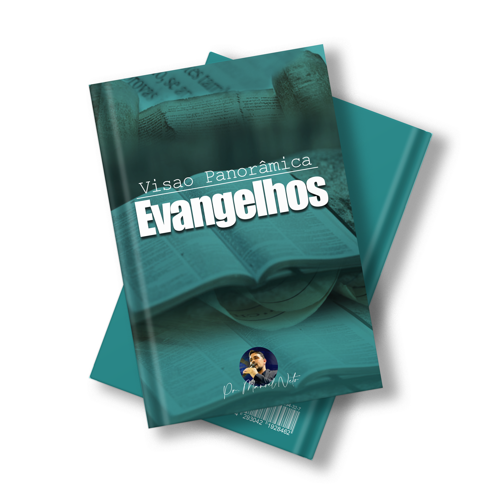
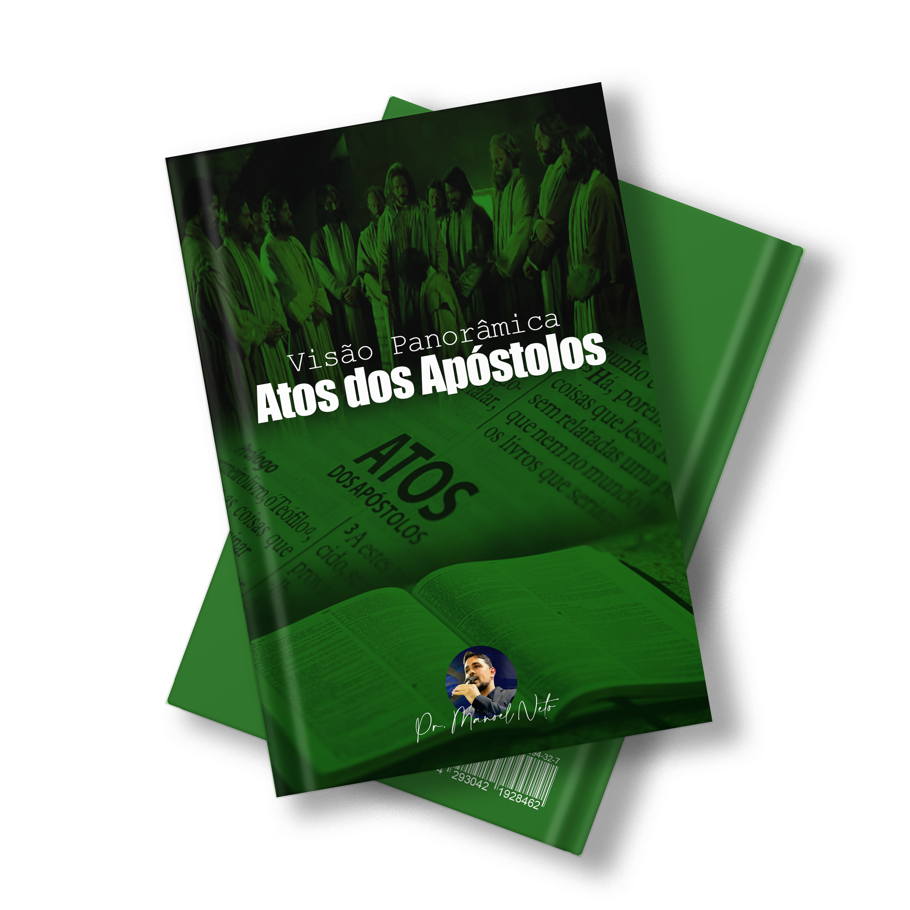
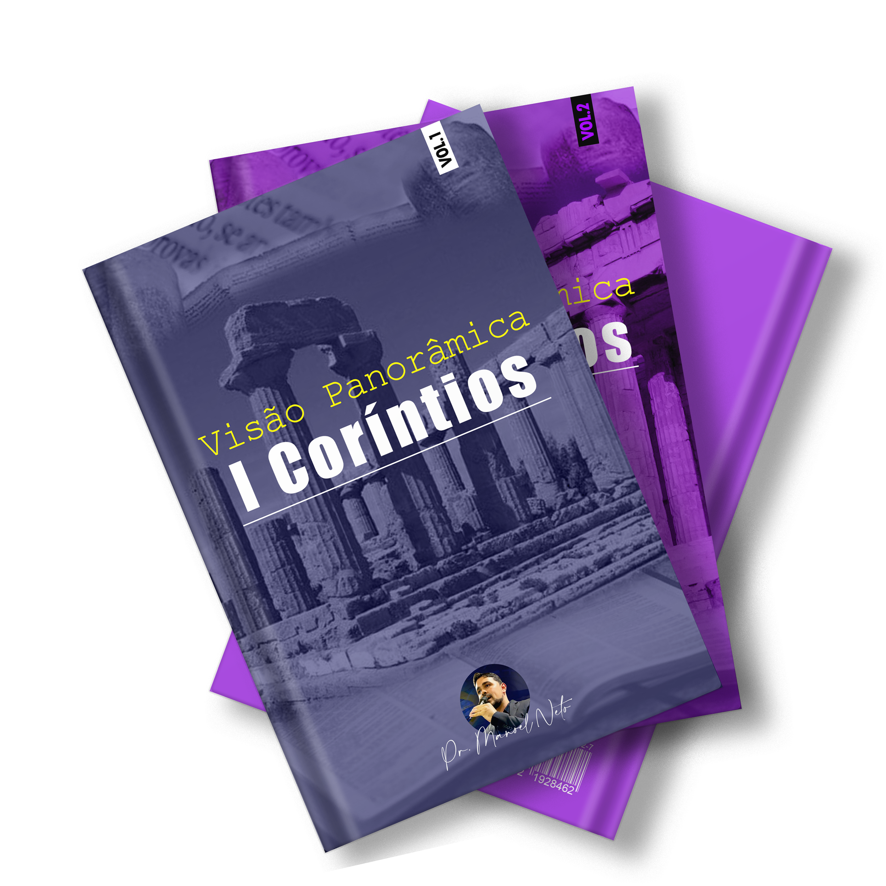
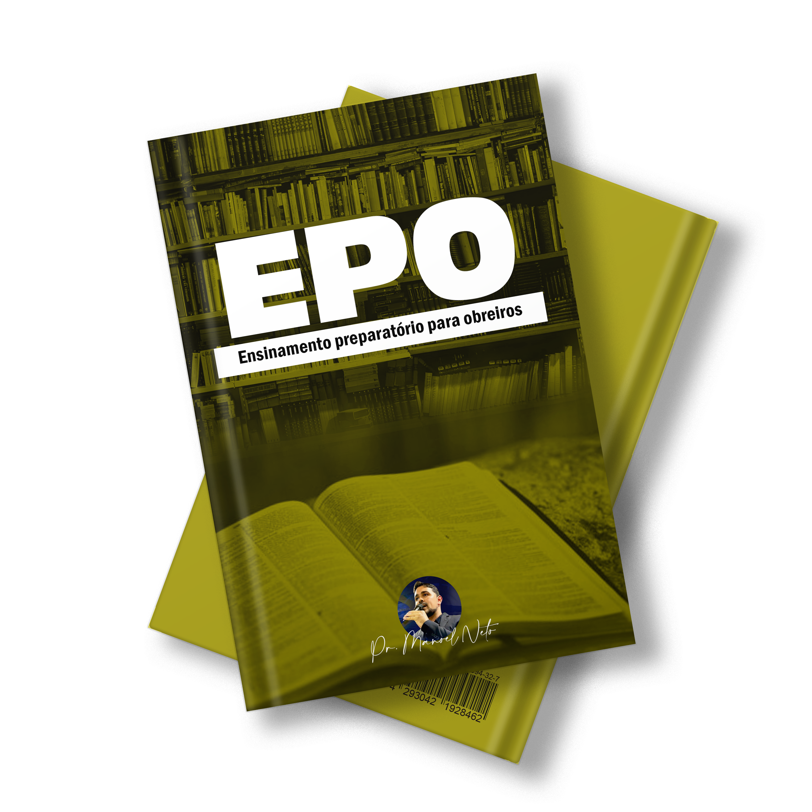
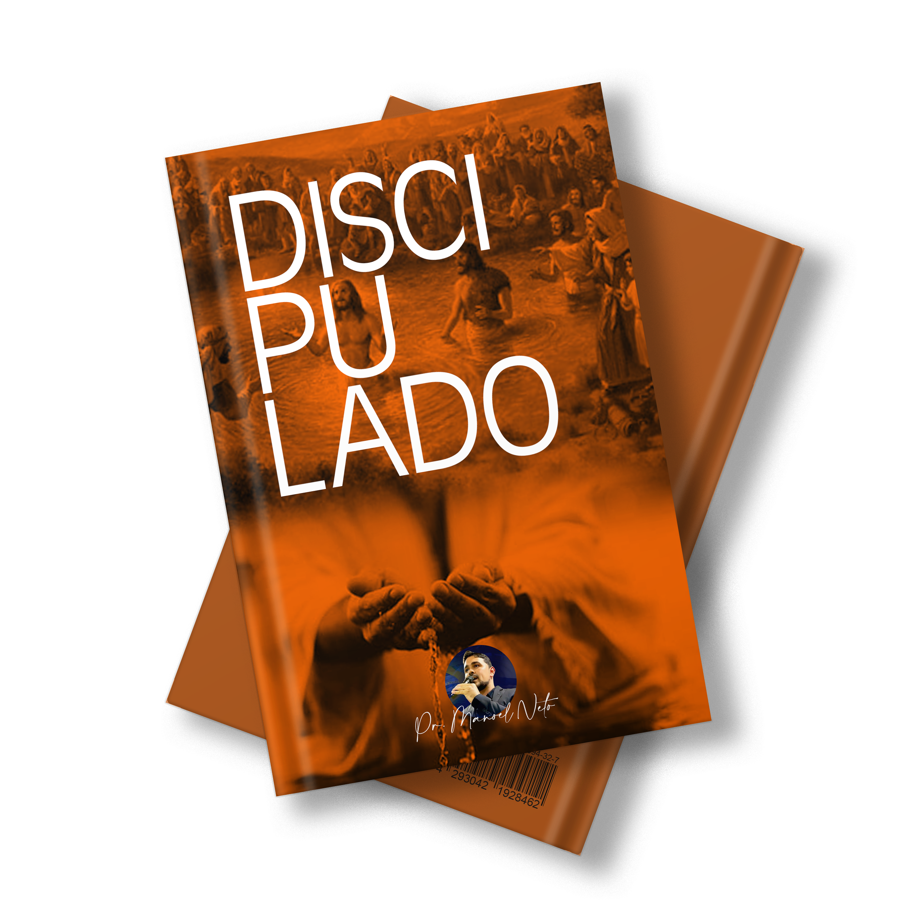

LISTA DE LIVROS
E-BOOKS
Escatologia Reformada Vol.1
Vol 1
"Este livro é um manual das profecias do fim, neste haverá comentários e
exegeses contundentes quanto aos detalhes dos últimos dias. Abordamos com
liberalidade e ousadia temáticas não exploradas, quebrando linhas de
pensamentos procuramos com responsabilidade manter padrões e reformar
conceitos obsoletos
DeR$45,00
Por R$ 20,99
De
Por R$ 20,99
Visão Panorâmica - Evangelhos
Vol 1
Os Evangelhos sinóticos são o espelho da vida e obra do homem ideal, Cristo Jesus, Deus no barro, conosco, bem presente e anunciando as boas novidades da Salvação.
Muitos conhecem a história dos Evangelhos, mas não conhecem o Jesus dos Evangelhos!!!
De
Por R$ 9,99
Visão Panorâmica - Atos dos Apóstolos
Vol 1
Este estudo visa trazer uma visão panorâmica teológica sobre o livro abordado, Atos dos Apóstolos, explicando de forma breve cada capítulo, e não detalhando cada verso, mas, explicando de forma clara e objetiva as interpretações.
De
Por R$ 9,99

Visão Panorâmica - Coríntios I e II
Vol 1 e 2
Eu plantei, Apolo regou; mas Deus deu o crescimento: Plantamos o que não é nosso, não criamos a semente, não desenvolvemos a salvação,
e quando regamos estamos cuidando daquilo que brotou da terra, que nasceu, gerado pelo Criador!!!
A antiga cidade foi parcialmente destruída pelos romanos em 146 a.C., mas em 44 a.C., foi reconstruída como uma cidade romana.
A antiga cidade foi parcialmente destruída pelos romanos em 146 a.C., mas em 44 a.C., foi reconstruída como uma cidade romana.
De
Por R$ 9,99
Balanças Enganosas - Seitas e Heresias

Vol 1 e Vol 2
Toda Seita possui uma característica em comum: Diminuem ou Negam a Soberania divina de Jesus!
Não multipliqueis palavras de altíssimas altivezas, nem saiam coisas árduas da vossa boca; porque o Senhor é o Deus da sabedoria, e por ele são as obras pesadas na balança. (1 Samuel 2: 3) Duas espécies de peso são abomináveis ao Senhor, e balanças enganosas não são boas. (Provérbios 20: 23)
br>De Não multipliqueis palavras de altíssimas altivezas, nem saiam coisas árduas da vossa boca; porque o Senhor é o Deus da sabedoria, e por ele são as obras pesadas na balança. (1 Samuel 2: 3) Duas espécies de peso são abomináveis ao Senhor, e balanças enganosas não são boas. (Provérbios 20: 23)
Por R$ 9,99
Ensino Preparatório para Obreiros - EPO
Vol 1
Ensino preparatório para obreiros, um curso revelado por Deus para a perfeição da sua obra.
Ouça a vocação divina no seu coração, valorize-a deixando para trás todo o embaraço e corra
para alcançar a carreira que lhe está proposta. (hb 12: 1) Se esforce, não te dê descanso,
leia, ore, medite, jejue, evangelize e seja usado pelo Senhor. Antes subjugo o meu corpo,
e o reduzo à servidão, para que, pregando aos outros, eu mesmo não venha de alguma maneira a ficar reprovado.
(I Co 9: 27)
De
Por R$ 9,99
Discipulado
Vol 1
"Se com a tua boca confessares a Jesus como Senhor, e em teu coração creres que Deus o
ressuscitou dos mortos serás salvo"(Rm. 10:9). Lembre-se de que um pecador perdido não pode
salvar o seu próximo, pois, não pôde salvar a si mesmo. Aqueles que os homens veneram e consideram
como deuses não são de fato deuses porque eles também morreram: "Nenhum deles de modo algum pode remir
a seu irmão, ou dar a Deus o resgate dele"(Sl.49:7).
De
Por R$ 9,99